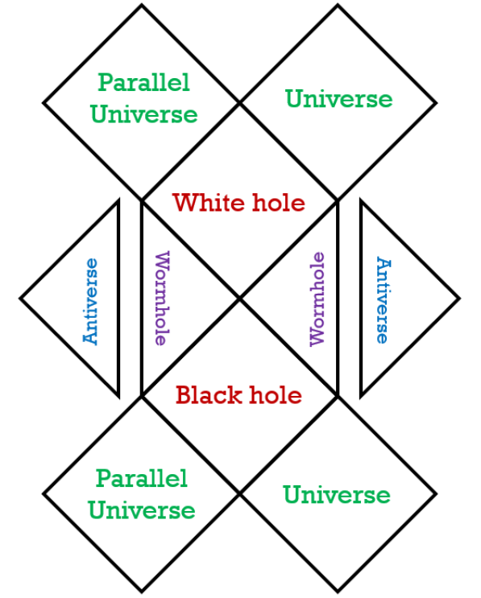
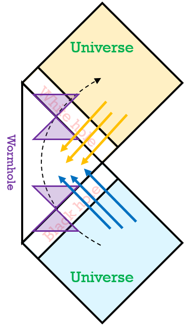
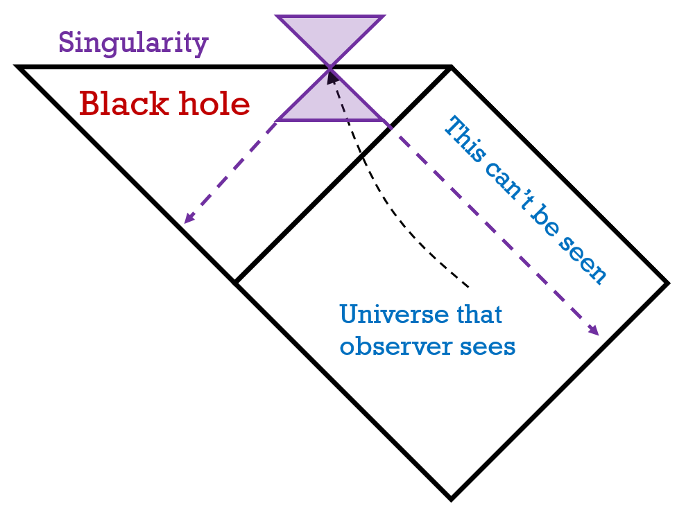
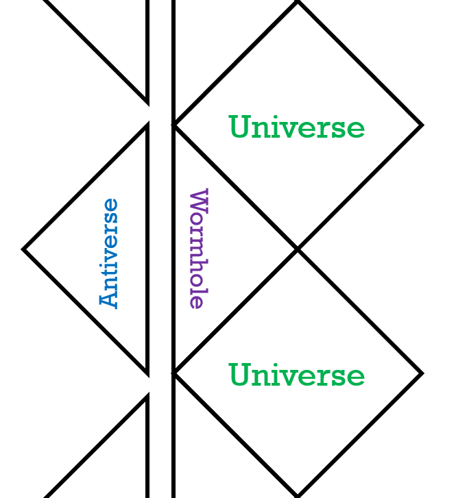

A Reissner-Nordstrom black hole is a non-rotating black hole with a charge. The geometry was first described by Hans Reissner, and later expanded on by Gunnar Nordstrom, forming the Reissner-Nordstrom metric: the geometry around a charged black hole.
The penrose diagram describing the gemotry around a Reissner-Nordstrom black hole is on the right. The lines between the antiverses and wormholes are supposed to be the singularity.

If you were to fall through the black hole, you would see the entire future of the universe as well as the infinite past of the new universe and the other end. This is shown on the diagram to the right.
As you enter the wormhole, the other universe becomes visible to your light cone. As you are passing through the wormhole, the future of the universe becomes visible to your light cone.

This, however, is not the case in a schwarzschild black hole.
Take the path on the left, for example. The observer can only see the universe till where his past light cone extends to, whereas in the reissner-nordstrom trajectory, the observer's light cone moves to the point where the whole universe's light can reach the observer.
The distance between the event horizon and the inner horizon to the wormhole is given by (M2+Q2)1/2. If the charge equals the mass of the black hole, then M=Q, and then the expression amounts to 0. This is known as an extremal black hole, where the object is simply a wormhole.